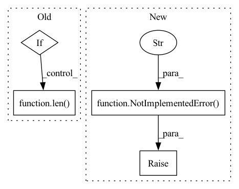

Pattern ID :30076
Before Change
hids = self.kg_feat[self.head_entity_field].values
tids = self.kg_feat[self.tail_entity_field].values
if value_field is None:
data = np.ones(len( self.kg_feat) )
else:
if value_field not in self.field2source:
raise ValueError("value_field [{}] not exist.".format(value_field))After Change
elif form in ["dgl", "pyg"]:
return self._create_graph(*args)
else:
raise NotImplementedError("kg graph format [{}] has not been implemented." )
def _create_ckg_sparse_matrix(self, form="coo", show_relation=False):
user_num = self.user_num
In pattern: SUPERPATTERN
Frequency: 3
Non-data size: 4
Instances Fragment ID: 89238291
Project Name: rucaibox/recbole
Commit Name: 99520bd0ce125867d14c0bc57c3414e484b9c125
Time: 2020-09-23
Author: houyupeng@ruc.edu.cn
File Name: recbox/data/dataset/kg_dataset.py
M Class Name: KnowledgeBasedDataset
N Class Name: KnowledgeBasedDataset
M Method Name: kg_graph(3)
N Method Name: kg_graph(3)
M Parent Class: Dataset
N Parent Class: Dataset
M File Name: recbox/data/dataset/kg_dataset.py
N File Name: recbox/data/dataset/kg_dataset.py
M Start Line: 199
M End Line: 221
N Start Line: 188
N End Line: 196
Before Change
@property
def end_index(self) -> Union[int, None]:
if len(self) == 0:
return None
return None if len( self) == 0 else self.start_index + len(self) - 1
def write(self, data_array: Union[List, np.ndarray, Tuple], index: int = None):
Write data_array to FeatureStorage starting from index.After Change
If the data(storage) does not exist, return None
raise NotImplementedError("Subclass of FeatureStorage must implement `end_index` method" )
def clear(self) -> None:
raise NotImplementedError("Subclass of FeatureStorage must implement `clear` method")
Fragment ID: 89238293
Project Name: microsoft/qlib
Commit Name: 5da33562ddae7f78439d211269232b40f5231857
Time: 2021-05-25
Author: zhu.pengrong@foxmail.com
File Name: qlib/data/storage/storage.py
M Class Name: FeatureStorage
N Class Name: FeatureStorage
M Method Name: end_index(1)
N Method Name: end_index(1)
M Parent Class: BaseStorage
N Parent Class: BaseStorage
M File Name: qlib/data/storage/storage.py
N File Name: qlib/data/storage/storage.py
M Start Line: 259
M End Line: 261
N Start Line: 299
N End Line: 299
Before Change
path = urlpath.split("::")[0]
// remove "dl=1" query param: https://foo.bar/train.json.gz?dl=1 -> https://foo.bar/train.json.gz
suf = "?dl=1"
if path.endswith(suf):
path = path[: -len( suf) ]
// Get extension: https://foo.bar/train.json.gz -> gz
extension = path.split(".")[-1]After Change
pass
elif extension in COMPRESSION_EXTENSION_TO_PROTOCOL:
return COMPRESSION_EXTENSION_TO_PROTOCOL[extension]
raise NotImplementedError(f"Extraction protocol "{extension}" for file at "{urlpath}" is not implemented yet" )
def xopen(file, mode="r", *args, **kwargs):
Fragment ID: 89238299
Project Name: huggingface/datasets
Commit Name: 492fb1640cc311ac1eda4be4ed3ea08341a1decb
Time: 2021-10-04
Author: 8515462+albertvillanova@users.noreply.github.com
File Name: src/datasets/utils/streaming_download_manager.py
M Class Name: AnonimousClass
N Class Name: AnonimousClass
M Method Name: _get_extraction_protocol(1)
N Method Name: _get_extraction_protocol(1)
M Parent Class:
N Parent Class:
M File Name: src/datasets/utils/streaming_download_manager.py
N File Name: src/datasets/utils/streaming_download_manager.py
M Start Line: 142
M End Line: 156
N Start Line: 144
N End Line: 153